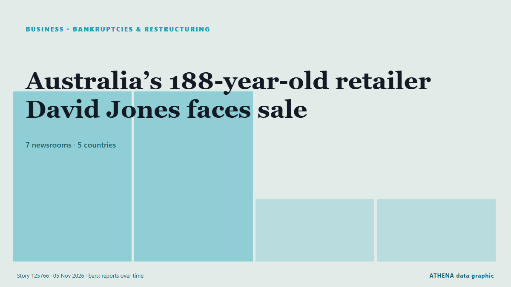

Επιχειρήσεις, Εταιρείες & Επενδύσεις
ΧορηγούμενοΠαρουσιάζεται από  Cybernetics and Artificial Intelligence Lab Welcome to the Cybernetics and Artificial Intelligence Laboratory, established at the Department of Business Administration of the National and Kapodistrian University of Athens. The lab is headed by Professor Dimitrios Thomakos. The lab aims to do research that can be published in top venues. Our research uses tools and methods of Artificial Intelligence, and lies in the following areas: - Forecasting - Decision making - Cyber security - Finance We are always looking forward to collaborating with exceptional students!
Cybernetics and Artificial Intelligence Lab Welcome to the Cybernetics and Artificial Intelligence Laboratory, established at the Department of Business Administration of the National and Kapodistrian University of Athens. The lab is headed by Professor Dimitrios Thomakos. The lab aims to do research that can be published in top venues. Our research uses tools and methods of Artificial Intelligence, and lies in the following areas: - Forecasting - Decision making - Cyber security - Finance We are always looking forward to collaborating with exceptional students!
Οι τίτλοι των ειδήσεων παρουσιάζονται στα αγγλικά, όπως δημοσιεύτηκαν.

Πτωχεύσεις & αναδιαρθρώσειςAustralia’s 188-year-old retailer David Jones faces sale
The department store was placed into voluntary administration as rising costs, sluggish retail sales and supply chain pressures weighed on its business. από Free Malaysia Today
| 23 Οκτ | 67 |
|---|---|
| 24 Οκτ | 40 |
| 25 Οκτ | 37 |
| 26 Οκτ | 95 |
| 27 Οκτ | 96 |
| 28 Οκτ | 93 |
| 29 Οκτ | 105 |
| 30 Οκτ | 92 |
| 31 Οκτ | 27 |
| 1 Νοε | 33 |
| 2 Νοε | 114 |
| 3 Νοε | 98 |
| 4 Νοε | 71 |
| 5 Νοε | 0 |
Google extends voluntary buyout offers to employees in several countries amid heavy AI spending
It has offered such packages to staff in Canada, France, Germany, Japan and Switzerland. από The Business Times
Culture Secretary formally intervenes in Sky’s £1.6bn ITV deal
Lisa Nandy will bring forward streaming legislation to allow a new public interest consideration covering broadcasting of on-demand programmes. από The Irish News (Belfast)
Revolut reaches $115 billion valuation after latest fundraising
Revolut has completed its latest fundraising process, reaching a $115 billion valuation, the fintech company announced on Wednesday, as it continues expanding its banking operations across… από Cyprus Mail
Ukraine, EU enlargement and energy to top agenda of Visegrad Four summit
Ukraine, European Union enlargement and energy will be the main topics of the Visegrad Four summit, which will be held in Trenčín, Slovakia, on November 4-5. από Ukrinform (English)
German auto supplier Schaeffler to cut 3,460 jobs in Europe amid automotive crisis
Restructuring targets net reduction of 2,660 positions in Germany and 800 across rest of Europe by 2028. από Anadolu Agency (English)
Emaar Properties offers Dh15-per-share cash in Emaar Development buyout
Dubai: Emaar Properties has announced plans to acquire the remaining shares in Emaar Development for Dh15 apiece in cash, confirming an earlier Bloomberg report that the Dubai-based property group… από Gulf News
Piraeus Port Authority nine-month profit falls 21.5%
Piraeus, Greece (Ports Europe) November 4, 2026 – Piraeus Port Authority (PPA) reported a 21.5% fall in nine-month profit to €59.7 million, but container throughput at Pier I grew in the third… από Ports Europe
Aramco acquires 49% stake in Saudi Arabia's Humain
RIYADH: Saudi Aramco has completed its acquisition of a 49 percent stake in artificial intelligence company Humain, formalising an agreement first announced in October 2025, in a transaction… από Arab News
German automaker giant BMW's operating profit falls to lowest level since 2020
Munich-based automaker's operating profit falls by 35.2% in 1st 9 months of 2026. από Anadolu Agency (English)
Rail Rivalry: Schneider’s Bold Move to Norfolk Southern from CSX
Schneider is making a monumental shift in its intermodal operations, moving all eastern rail business from CSX to Norfolk Southern. από FreightWaves
Google to pour US$15bil into Malaysia's digital future
KUALA LUMPUR: Google will invest US$15 billion in Malaysia between 2027 and 2028 to develop digital infrastructure, including data centre campuses in industrial zones, and expand clean energy… από New Straits Times
Klobuchar notches win in Minnesota governor's race
Amy Klobuchar will replace outgoing Governor Tim Walz, the 2024 Democratic vice presidential nominee, who ended his bid for a third term after the long-simmering fraud investigation exploded into a… από NDTV
South Korean TV Drama Industry Seeks $746 Million in Support as Output Declines
Danantara prepares project pipeline for US talks ahead of G20
Indonesia’s sovereign wealth fund, the Danantara Investment Management Agency, is finalizing a portfolio of ... από Antara (English)
Libya's top religious authority rules against wearing Nike clothes
The US company was named after the Greek goddess of victory, so the Dar al-Ifta said displaying its logo was unIslamic. από BBC News
StormGeo acquires Portchain to accelerate Just-in-Time voyage optimisation at scale
StormGeo’s acquisition of software provider Portchain adds port call coordination to StormGeo’s Voyage Intelligence platform. από Ship.Energy
Von der Leyen: Hormuz closure cost Europe €127 billion
European Commission president's remarks come after the US struck Iran’s Qeshm Island on Monday night. από Euractiv
Apple FYQ4 Revenue Tops Forecasts On iPhone Sales As New CEO John Ternus Steps Up
Apple revenue beat Wall Street forecasts rising 12% for the fiscal fourth quarter ended in September, led by strong iPhone sales. από Deadline
Nexperia sues Wingtech and its founder, demanding compensation for damages
Nexperia has launched legal action against its Chinese parent company, Wingtech Technology, demanding more than $2 billion in compensation, according to Wingtech. από NL Times
Palantir nearly doubles 3Q26 revenue, riding wave of commercial demand
Palantir reported third-quarter 2026 revenue results that nearly doubled from the previous year. από DigiTimes Asia
Hinge is making a surprising change to its subscriptions. Here’s who stands to benefit
Hinge users may soon have access to a more affordable subscription tier. από Fast Company
Aramco’s Q3 profit jumps 34.5% to $36.3bn
RIYADH: Saudi Aramco’s net profit rose 34.5 percent year on year to $36.3 billion in the third quarter, boosted by higher revenue and a gain from the sale of its stake in Malaysian refining and… από Arab News
Seven Arrested in International Operation Targeting Investment Fraud
Authorities from seven countries seized more than 100 servers and arrested seven suspects of investment fraud that may have costed victims in at least 50 countries more than $4.6 million. από OCCRP
Bahrain announces $3.89bn investment as AirAsia, DHL and Meliá unveil major projects
Bahrain announces $3.89bn in investment across four Golden Licence projects involving AirAsia, DHL, Meliá and a new technology hub. από Arabian Business
Retailer Zalando launches AI shopping agent as margins squeezed
Zalando beat sales expectations in the third quarter and introduced its first AI-powered shopping tool, but investors focused on weaker margins. από The Next Web
Iulian Stanciu is selling Flanco electroretail-chain to Kotsovolos, part of the PPC Group
PPC Group announces that its 100% subsidiary Kotsovolos (Next Gen Retail Services Single Member) has signed an agreement for the acquisition of 100% of the shares of the Romanian technology and… από Business Review (Romania)
Hypersonic missile being made by British-German startup ‘could strike deep inside Russia’
It comes as part of a UK-German defense parnership signed by former defence secretary John Healey in 2024. από The Independent
Tanzania eyes global energy conquest using 2026 ADIPEC to lure foreign capital
ABU DHABI: TANZANIA is positioning itself to tap into global investment opportunities in the energy sector by attracting both domestic and foreign capital, Energy Minister Dr Juma Homera has said. από Daily News
TotalEnergies to Take Operatorship of Two Major Gas Fields off Malaysia
TotalEnergies has signed agreements to acquire a 30% operated interest in the Lang Lebah and B14 gas fields offshore Malaysia, paving the way for an integrated development… από Offshore Engineer
AD Ports Group appoints Afif Saif Al Yafei as new CEO
AD Ports Group has appointed Dr. Afif Saif Al Yafei as its new Group Chief Executive Officer, succeeding Captain Mohamed Juma Al Shamisi, who has led the company since 2014. από Container News
Blackstone’s Gray sees more AI equity fundraising ahead from major tech firms
Gray’s comments reinforce a theme running through this week’s news flow: the AI buildout is increasingly being financed by issuing shares, not just from cash flow and debt. από investingLive (ForexLive)
New Apple CEO John Ternus chalks up some early wins, but the honeymoon is over
Apple beat earnings expectations Monday, but it’s facing surging memory chip costs and investor questions about its new Siri AI product. από Fortune
Judge blocks Trump administration from pressuring states over non-citizen voting
Non-citizen voting is illegal and all available evidence shows that it is exceedingly rare. από The Straits Times